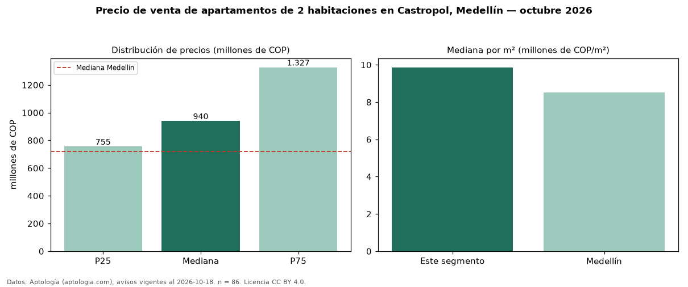

Precio de venta de apartamentos de 2 habitaciones en Castropol, Medellín — octubre 2026
Con 86 avisos vigentes, el precio mediano de apartamentos de 2 habitaciones en venta en Castropol, Medellín es COP 940 millones. Eso es 31 % por encima de la mediana de Medellín para apartamentos de 2 habitaciones (COP 720 millones). Por metro cuadrado, la mediana es COP 9,86 millones/m² (n = 82 avisos con área), 16 % por encima de Medellín (COP 8,51 millones/m²). Son 20 % de los 431 avisos de apartamentos en venta de la zona, cuya mediana general es COP 1,10 mil millones (−15 %). Con el precio por m² de arriendo del mismo segmento (COP 57.461/m² al mes), la rentabilidad bruta implícita es 7,0 % anual (aproximación con medianas de ofertas distintas). El área mediana anunciada es 94 m². La administración mediana declarada es COP 774.500 al mes (n = 52). El estrato más frecuente es 6 (82 % de los avisos con estrato). Datos: Aptología (aptologia.com), CC BY 4.0 — https://www.aptologia.com/venta/medellin/castropol. Archivos: PDF, CSV con las cifras y gráfica PNG.

| Avisos únicos | 86 |
|---|---|
| Percentil 25 | COP 755.000.000 |
| Mediana | COP 940.000.000 |
| Percentil 75 | COP 1.326.824.098 |
| Mediana por m² | COP 9.861.084 |
Fuente: avisos vigentes de portales inmobiliarios recopilados por Aptología, deduplicados (mínimo 30 avisos únicos por celda). Precios pedidos, no cerrados. Fecha: 2026-10-18.